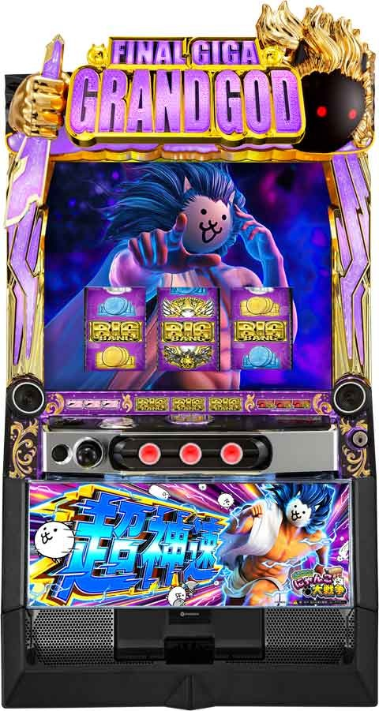
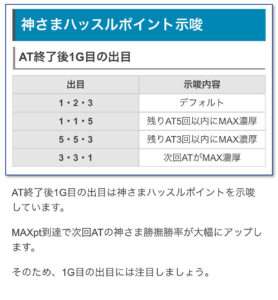
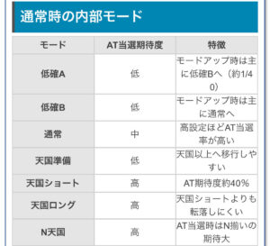
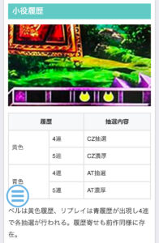

Lにゃんこ大戦争超神速

【天井情報】
1122G+α AT当選+金の勝撫缶
設定変更時は922G+αに短縮
【リセット判別】
不明
【有利区間について】
有利区間内の差枚数が＋2200枚を超えた状態で神さま勝撫に突入またはエンディング発生で上位AT「夢想」濃厚
有利区間切れ条件 不明
※通常時は順押しのみで消化
狙い目
【リセット狙い】
340Gから
【AT間天井狙い】
540Gから
上位AT後（一撃2500枚以上目安） 300Gから
【ゾーン狙い】
・400ゾーン
390Gから
【神さまハッスルポイント狙い】
不明。
次回解放確定ならAT当選まで？
【有利区間切れ狙い】
差枚+1500枚以上 340Gから
やめ時
1G回して神さまハッスルポイント示唆を見てやめ。液晶出目が331なら次回ATまで。
上位AT後、一撃1500枚以上後は50-60Gくらい回してやめ
その他
神さまハッスルポイント示唆

通常時の内部モード

小役履歴

参考元
基本情報
- メーカー: 京楽
- 機械割: 97.5% 〜 114.9%
- 導入開始日: 2025年01月20日（月）
- ゲーム性概要: ●純増約9枚/GのAT機 ●神さま炎撫で勝撫缶を貯めて、神さま勝撫に勝利で次セットへ継続 ●ガチャで獲得したキャラで上乗せが発生する「究極降臨ガチャ」も搭載！ ●プレミアムのBIG BANG揃いには強力な恩恵あり


打ち方
打ち方・小役
打ち方（小役狙い）

目押しの必要はないので、順押しであれば全リールフリー打ちでOK（ハサミ打ちもNG）。
「レア役の停止形」

変則押しはNG

通常時・押し順ナビなし時は“順押し”での消化を推奨。本機はハサミ打ちもNGとなる。
確定役
確定役の恩恵
| 役 | 恩恵 |
|---|---|
| 白7揃い | AT30G以上＋金の勝撫缶 |
| 赤7揃い | AT50G以上＋金の勝撫缶 |
| BIG BANG揃い | 究極降臨ガチャ＋金の勝撫缶 |
確定役はAT初期ゲーム数の優遇に加え、金勝撫缶を持って始まるので、1セット目の継続も濃厚。合算確率は約1/2427。
[確定役の1確・2確目]

解析情報通常時
小役関連
小役履歴

小役履歴での抽選内容
| 履歴 | 抽選 |
|---|---|
| 黄履歴 | ● 4連…CZ抽選 ● 5連…CZ濃厚 |
| 青履歴 | ● 4連…AT抽選 ● 5連…AT濃厚 |
ベル入賞で黄、リプレイ入賞で青の履歴が入る。同一履歴の連続をアシストしてくれる巨神ネコやネコダラボッチは今作にも登場！
「巨神ネコ・ネコダラボッチ」

小役履歴の上に出現し、同一履歴の連続をアシストしてくれるキャラ。黄履歴時に登場した場合はリプレイが成立するまで、青履歴時に登場した場合はベルが成立するまで滞在し、履歴を左側に寄せ続ける。
小役確率
| 役 | 確率 |
|---|---|
| 下段ベル | 1/9.7 |
| 右上がりベル | 1/48.9 |
| 中段ベル | 1/1008.2 |
| 中段リプレイ | 1/99.9 |
| チャンス目 | 1/409.6 |
| 赤7フェイク | 1/5041.2 |
| 白7フェイク | 1/4369.1 |
| 赤7揃い | 1/7281.8 |
| 白7揃い | 1/6553.6 |
| BIG BANG揃い | 1/8192.0 |
AT当選期待度
| 役 | 期待度 |
|---|---|
| 下記以外 | 低 |
| 赤7or白7フェイク | ↓ |
| 右上がりベル | ↓ |
| 中段リプレイ | ↓ |
| チャンス目 | ↓ |
| 中段ベル | 高 |
狂乱高確中・CZ当選率
| 役 | 当選率 |
|---|---|
| 下段ベル | 約20% |
| 右上がりベル | 約50% |
| 中段ベル | 約50% |
内部状態関連
狂乱高確モード
大狂乱のネコ島（CZ）突入に関わる内部状態で、ベル成立時に高確移行が抽選される。ゲーム数消化でも高確移行の可能性があり、 400Gはチャンス、800Gは高確移行濃厚 だ。 高確はショートとロングの2種類で、ロングは1回のCZ保証あり。高確ロングにはループ性があるため、連続してCZに突入する可能性もある。
狂乱高確移行契機
| 契機 | 抽選 |
|---|---|
| ベル | 高確移行抽選あり |
| 400G消化 | 高確移行のチャンス |
| 800G消化 | 高確ショート以上濃厚 |
狂乱高確の特徴
| 高確 | 特徴 |
|---|---|
| ショート | ● ベル成立でCZ当選のチャンス ● 滞在中のCZ当選期待度は約33% |
| ロング | ● 1回のCZ保証あり ● CZ後も高確ロングがループする可能性あり ● 転落時は高確ショートへ移行 |
［牙出現］

液晶に牙出現時は狂乱高確滞在に期待できる。
内部状態概要
成立役に応じて内部状態の移行を抽選。天国以上に上げてレア役でAT当選というのがオーソドックスなATまでのルートとなる。
内部状態ごとの特徴
| 状態 | 期待度 | 特徴 |
|---|---|---|
| 低確A | 低 | 約1/40で状態アップ、 状態アップ時はおもに低確Bへ |
| 低確B | 低 | 状態アップ時はおもに通常へ |
| 通常 | 中 | 高設定ほどAT当選率アップ |
| 天国準備 | 低 | 天国以上へ移行しやすい |
| 天国ショート | 高 | AT期待度約40% |
| 天国ロング | 高 | 天国ショートより転落しづらく、 AT期待度も高い |
| N天国 | 高 | AT当選時はN揃いの期待大 |
※N揃い…金の勝撫缶を持ってATがスタート
小役ごとの特徴
| 役 | 特徴 |
|---|---|
| 中段リプレイ | ● 低確A中は状態アップ濃厚 ● 低確B～天国ショートまでは約50%で状態アップ |
| 右上がりベル | ● 低確A中は約33%で状態アップ ● 低確B～天国ショートまでは約50%で状態アップ |
| 中段ベル | ● 低確A～通常までは状態アップ濃厚 ● 通常では約50%で状態アップ ● 天国準備中は天国ショート以上濃厚 |
| チャンス目 | ● 低確A中は状態アップ濃厚 ● 低確B～天国ショートまでは約50%で状態アップ |
| 確定役フェイク | ● アップしづらいが、アップ時は天国ロングやN天国の期待大 |
| その他 | ● リプレイやバラケ目でも状態アップの可能性はある |
［通常中］AT当選確率
| 設定 | 確率 |
|---|---|
| 1 | 約1/2020 |
| 2 | 約1/886 |
| 4 | 約1/472 |
| 5 | 約1/362 |
| 6 | 約1/253 |
［ベル］狂乱高確移行率
当選時は基本的に狂乱高確ショートへ、中段ベルの0.4%で狂乱高確ロングへ移行する。
［規定ゲーム数消化］狂乱高確移行率
| ゲーム数 | 移行率 |
|---|---|
| 400G | 50.0% |
| 800G | 100% |
400G、800G到達時にすでに狂乱高確に滞在していた場合は、高確ロングへの昇格が抽選される。
狂乱高確からの転落抽選
| 滞在状態 | 抽選 |
|---|---|
| 狂乱高確ショート | 下段ベルの一部で転落 |
| 狂乱高確ロング | CZ当選時に転落を抽選、 転落時は狂乱高確ショートへ |
モード
神さまはあきらめないモード
AT終了時限定で移行する可能性のある、実質AT当選濃厚の特殊モード。このモードへ移行した場合、ATの継続回数を内部的に引き継ぐため、早い夢想突入に期待できる（夢想終了後なら夢想へ復帰）。 約30〜40GでATに当選するため、AT後も40G程度は様子をみるようにしよう。
大狂乱のネコ島（CZ）
大狂乱のネコ島概要

ベル・レア役成立でAT当選濃厚のCZ。黄の小役履歴4連以上や、狂乱高確中のベル成立時の抽選を契機に突入する。
大狂乱のネコ島性能
| 項目 | 内容 |
|---|---|
| 当選契機 | ● 狂乱高確中のベル成立時の抽選 ● 黄履歴4連時の抽選 ● 黄履歴5連は突入濃厚 |
| 継続ゲーム数 | ● 5G固定 |
| 消化中の抽選 | ● ベル・レア役成立でAT濃厚 |
大狂乱のネコ島確率
| 設定 | 確率 |
|---|---|
| 1 | 1/544 |
| 2 | 1/538 |
| 4 | 1/489 |
| 5 | 1/464 |
| 6 | 1/461 |
神さまハッスルポイント
神さまハッスルポイント概要
内部的に蓄積されるポイントで、MAXになれば 次回AT中の神さま勝撫の勝率が大幅にアップ 。蓄積ポイントはAT終了後1G目の液晶出目で示唆される。
AT終了後1G目の液晶出目・示唆内容
| 出目 | 示唆 |
|---|---|
| 123 | デフォルト |
| 115 | 残りAT5回以内にポイントMAX濃厚 |
| 553 | 残りAT3回以内にポイントMAX濃厚 |
| 331 | 次回ATがポイントMAX濃厚 |
演出動画
ロングフリーズ
BIG BANG揃い時の一部で発生。究極降臨ガチャでゲーム数を獲得してATへ突入する。
解析情報ボーナス時
神さま炎撫（AT）
神さま炎撫概要

1セット10G以上継続するAT。滞在中は成立役に応じて勝撫缶を獲得し、ゲーム数消化後の神さま勝撫で勝撫缶を使いながら継続をジャッジ。初回は最低3個の勝撫缶を持った状態でスタートする。 規定回数（最大14回）継続成功で突入する「夢想」は、継続期待度が大幅にアップした上位AT的な状態だ。
神さま炎撫性能
| 項目 | 内容 |
|---|---|
| 継続ゲーム数 | 10～100G/セット（初回は20G以上） |
| 1Gあたりの純増 | 約9.0枚 |
| 消化中の抽選 | リプレイ・レア役で勝撫缶獲得を抽選 （勝撫缶1個でバトル1回） |
| ゲーム数消化後 | 神さま勝撫へ |
AT中にゲーム数の上乗せ抽選はないが、究極降臨ガチャを経由した場合はガチャで獲得したゲーム数が1セットのゲーム数になる。
「体操ステージ」

基本ステージ。
「激走ステージ」

勝撫缶獲得に期待できる高確ステージ。状態はセット開始時に決まっているので、激走へ移行しなくても内部的に高確といったケースはある。
「勝撫缶獲得」

「金の勝撫缶」

金色は勝利ストック。
炎撫モード

勝撫缶の獲得率を管理するモード。1と2の2種類で、激走ステージはモード2濃厚だ。モード2滞在中はリプレイでも勝撫缶獲得濃厚となる。
炎撫モード振り分け
| セット数 | 炎撫モード1 | 炎撫モード2 |
|---|---|---|
| 1セット目 | 79.7% | 20.3% |
| 2セット目～ | 84.8% | 15.2% |
成立役別の勝撫缶獲得期待度
| 役 | 期待度 |
|---|---|
| リプレイ・下段ベル | 低 |
| 中段リプレイ・右上がりベル | ↓ |
| チャンス目 | ↓ |
| 中段ベル | 高 |
チャンス目や中段ベルは勝撫缶複数個獲得や金勝撫缶獲得に期待できる。
夢想

規定回数のバトル勝利（最大14回）で突入する、バトル勝利期待度が大幅にアップした状態。一度夢想へ突入してしまえば、 AT終了まで転落することはない 。 勝撫缶を貯めて神さま勝撫に勝利で継続…という基本的なゲーム性は神さま炎撫と共通だ。
夢想突入抽選
AT当選時に決まる規定のバトル回数に勝利すれば（最大14回）夢想へ突入。BIG BANG揃いを経由した場合は最大11回かつ、約75%で6回以内が選ばれるので夢想突入の期待度が高い。 若干ではあるが、高設定ほど少ない回数が選ばれやすくなっている。
セット開始画面の色・示唆内容
| 色 | 示唆 |
|---|---|
| 青 | デフォルト |
| 緑 | 残り5勝以内に夢想へ突入 |
| 赤 | バトル勝利で夢想突入 |
［セット開始画面・赤］

神さま勝撫
神さま勝撫概要

神さま炎撫のゲーム数を消化後に移行し、勝撫缶1個につき1回バトルが発生。レア役は対戦相手不問で勝利濃厚だ。バトル勝利時に残りの勝撫缶が3個未満だった場合、3個に補填される。
神さま勝撫性能
| 項目 | 内容 |
|---|---|
| 移行契機 | 神さま炎撫のゲーム数消化後 |
| 継続ゲーム数 | 勝撫缶1個につき、1回のバトルが発生 |
| 消化中の抽選 | 成立役に応じて勝利抽選、レア役は勝利濃厚 （勝撫缶1個あたりの勝利期待度は平均25%） |
| バトル勝利後 | 神さま炎撫or夢想or究極降臨ガチャへ |
対戦相手別の勝利期待度
| 対戦相手 | 期待度 |
|---|---|
| ポセイドン | 低 |
| ハデス | ↓ |
| ギガントゼウス | ↓ |
| アフロディーテ | 高 |
［ポセイドン］

押し順ベルがチャンス。
［ハデス］

押し順ベル以外ならチャンス。
［ギガントゼウス］

大チャンス。
［アフロディーテ］

激アツ！
「勝利時に次セットのゲーム数を告知」

究極降臨ガチャに突入する場合も、このタイミングで告知される。
神さま勝撫の勝利当選率
| 役 | 夢想以外 | 夢想中 |
|---|---|---|
| ハズレ・下段ベル | 約18% | 約26% |
| 押し順ベル（ナビあり） | 約25% | 約38% |
| リプレイ | 約40% | 約50% |
| レア役 | 100% | 100% |
神さまハッスルポイントMAX時は夢想中と同じ数値で抽選。押し順ベル成立時は約1/3でナビが発生し、ナビなしベルはハズレ扱いで抽選がおこなわれる。
究極降臨ガチャ
究極降臨ガチャ概要

前作では初当り時に突入したが、今作では神さま勝撫勝利時の一部とBIG BANG揃い時に突入。ガチャから出てくる10体のキャラに応じて、上乗せされるゲーム数の期待度が変化する。
究極降臨ガチャ性能
| 項目 | 内容 |
|---|---|
| 当選契機 | BIG BANG揃い後、神さま勝撫勝利時の一部 |
| 消化中の抽選 | キャラを10体獲得後、キャラと成立役に応じて 1Gごとに上乗せゲーム数を抽選 |
「タイトルの色でガチャの排出率を示唆」


白＜青＜黄＜緑＜赤＜虹の順に上位のキャラ出現に期待できる。PUSHボタンを押すと色ごとの排出率も確認可能だ。 基本的にはタイトル色ごとの排出率に沿ってキャラを獲得するが、超ポセイドン（1〜10体目まで全部ポセイドン）のような特殊パターンも存在する。
タイトル色ごとのキャラ排出率 白タイトル
| キャラ | 1～9体目 | 10体目 |
|---|---|---|
| ポセイドン | 90% | ー |
| ハデス | 6% | ー |
| アフロディーテ | 4% | 90% |
| ギガントゼウス | ー | 10% |
青タイトル
| キャラ | 1～9体目 | 10体目 |
|---|---|---|
| ポセイドン | 83% | ー |
| ハデス | 6% | ー |
| アフロディーテ | 11% | 75% |
| ギガントゼウス | ー | 25% |
黄タイトル
| キャラ | 1～9体目 | 10体目 |
|---|---|---|
| ポセイドン | 77% | ー |
| ハデス | 6% | ー |
| アフロディーテ | 16% | 58% |
| ギガントゼウス | 1% | 42% |
緑タイトル
| キャラ | 1～9体目 | 10体目 |
|---|---|---|
| ポセイドン | 71% | ー |
| ハデス | 8% | ー |
| アフロディーテ | 19% | 37% |
| ギガントゼウス | 2% | 63% |
赤タイトル
| キャラ | 1～9体目 | 10体目 |
|---|---|---|
| ポセイドン | 65% | ー |
| ハデス | 8% | ー |
| アフロディーテ | 23% | 18% |
| ギガントゼウス | 4% | 82% |
虹タイトル
| キャラ | 1～9体目 | 10体目 |
|---|---|---|
| ポセイドン | 28% | ー |
| ハデス | 7% | ー |
| アフロディーテ | 30% | 1% |
| ギガントゼウス | 35% | 99% |
「ポセイドン」

［ポセイドン］上乗せ性能
| 項目 | 内容 |
|---|---|
| 上乗せ確率 | 上乗せ濃厚 |
| 上乗せゲーム数 | 最低5G（超ポセイドン中は最低10G） |
| その他 | （中段）リプレイ成立時は上乗せ優遇 |
「ハデス」

［ハデス］上乗せ性能
| 項目 | 内容 |
|---|---|
| 上乗せ確率 | 約1/6 |
| 上乗せゲーム数 | 上乗せ時は50G以上 |
| その他 | カットイン発生で上乗せ期待度アップ |
「アフロディーテ」

［アフロディーテ］上乗せ性能
| 項目 | 内容 |
|---|---|
| 上乗せ確率 | 高 |
| 上乗せゲーム数 | 20G以上 |
| その他 | 溜め演出発生で＋30G以上、 白7狙え成功で＋50G以上＆コンボ上乗せに期待 |
［白7を狙え］

「ギガントゼウス」

［ギガントゼウス］上乗せ性能
| 項目 | 内容 |
|---|---|
| 上乗せ確率 | 上乗せ濃厚 |
| 上乗せゲーム数 | 特大（30G以上） |
| その他 | 白7狙え成功で50G以上＋コンボ上乗せ発生 |
［コンボ上乗せ］


アフロディーテ・ギガントゼウス中の白7揃い時の一部で発生する0G連タイプの上乗せ。にゃんコンボとにゃんこアタックの2種類あり、コンボが継続する限り上乗せを獲得する。
演出情報
通常時
ステージ解説
| ステージ | 示唆 |
|---|---|
| ワルキューレ平原 | 通常ステージ |
| サングリア川 | 通常ステージ |
| クリムゾン広場 | 通常ステージ |
| アトラス遺跡 | 天国準備以上のチャンス |
| アフロディテの門 | 天国ショート以上濃厚 |
| メルカトル神殿 | 天国ショート以上濃厚かつ本前兆の期待大 |
通常ステージはワルキューレ平原→サングリア川→クリムゾン広場→ワルキューレ平原…の順で変化。この順番の法則が崩れると天国準備以上滞在濃厚となる。
［アトラス遺跡］

［アフロディテの門］

［メルカトル神殿］

リールロック発生時の示唆
| 段階 | 示唆 |
|---|---|
| 1段階 | レア役以上濃厚 |
| 2段階 | 確定役期待度約75% |
| 3段階 | 確定役濃厚 |
| 4段階 | BIG BANG揃い濃厚（フリーズ発生） |
「にゃんこステップアップ」

にゃんこステップアップと複合した場合の ステップ別のリールロック段階
| ステップ | リールロック |
|---|---|
| 3 | 1段階 |
| 4 | 2段階 |
| 5 | 3段階 |
| 6 | 4段階 |
リールロックと複合しやすい高期待度演出。ステップ4からリールロック2段階目になるので、ステップ3を超えるかが注目ポイントだ。
液晶出目の内部状態・前兆期待度示唆パターン
| 出目 | 出目の例 | 法則 |
|---|---|---|
| 奇数のみ | 513 | 通常以上のチャンス |
| どこかにN | 14N | 通常以上のチャンス （2N偶数を除く） |
| 左偶数＋奇数ケツテンパイ | 255 | 通常以上のチャンス |
| 偶数頭順目 | 234 | 通常以上濃厚 |
| 左偶数＋7ケツテンパイ | 477 | 通常以上濃厚 |
| 左奇数＋奇数ケツテンパイ | 311 | 天国準備以上のチャンス |
| 奇数頭順目 | 345 | 天国準備以上濃厚 |
| 奇数ハサミ＋中奇数 | 515 | 天国準備以上濃厚 |
| 奇数テンパイ＋右N | 55N | 天国準備以上濃厚 |
| 奇数テンパイ＋右7 | 557 | 天国準備以上濃厚＋ 本前兆期待度アップ |
| Nと7の両方含み | 1N7 | 天国準備以上濃厚＋ N天国期待度アップ |
| 左偶数＋Nケツテンパイ | 2NN | 天国準備以上濃厚＋ N天国期待度アップ |
| 左奇数＋7ケツテンパイ | 577 | 天国ショート以上の期待大 |
| 左奇数＋Nケツテンパイ | 5NN | 天国ショート以上の期待大 |
| Nハサミ＋中奇数 | N1N | 天国ショート以上濃厚 |
液晶リーチ目一覧
| リーチ目 | 語呂・意味合い |
|---|---|
| 123 | ワンツースリー |
| 168 | いろは |
| 175 | イナゴ |
| 184 | イワシ |
| 223 | 富士山 |
| 283 | 翼 |
| 315 | 最高 |
| 341 | サンシャイン |
| 365 | 365日 |
| 373 | 南 |
| 415 | よいこ |
| 423 | しじみ |
| 428 | 四ツ谷 |
| 44N | 四神 |
| 452 | 仕事人 |
| 481 | 支配 |
| 4N3 | ヨン様 |
| 514 | こいよ |
| 526 | こじろう |
| 543 | 暦 |
| 634 | 武蔵 |
| 681 | 無敗 |
| 716 | 七色 |
| 728 | なにわ |
| 753 | 七五三 |
| 758 | 名古屋 |
| 821 | ハニー |
| 884 | 林 |
| 8N5 | ぱちんこ |
| 7N7 | 7ハサミ中N |
| N7N | Nハサミ中7 |
| N46 | 乃木坂46 |
演出法則
| 演出 | 法則など |
|---|---|
| 水泡演出 | ● 期待度…★×1 ● 4連続すればATの大チャンス |
| 波動演出 | ● 期待度…★×2 ● 4連続すればATの大チャンス |
| 羽演出 | ● 期待度…★×1 ● 奇数テンパイなら前兆以上 |
| 羽竜巻演出 | ● 期待度…★×2 ● レア役否定で前兆以上 |
| 水柱演出 | ● 期待度…★×2 ● 第3停止時にPUSHボタン出現でATの大チャンス、タッチの指示なら激アツ |
| 火焔演出 | ● 期待度…★×3 ● レア役否定で激アツ |
| 画面シェイク演出 | ● 期待度…★×1 ● 第3停止まで続けばAT告知!? |
| アフロディーテの 矢演出 | ● 期待度…★×1 ● リプレイ否定で狂乱高確示唆 |
| そよ風演出 | ● 期待度…★×1 ● 内部状態アップを示唆 ● （中段）リプレイでの発生は状態アップor前兆移行濃厚 |
| ガイア創造演出 | ● 期待度…★×2 ● 4連続すればAT濃厚 ● 1回で終わった場合は天国準備以上濃厚 |
| チャンスボタン演出 | ● 期待度…★×3 ● レア役濃厚 ● 「チャンス」以外の文字出現で激アツ |
| ガネーシャの拳演出 | ● 期待度…★×4 ● 火焔演出から発展 ● 数字の先読みが発生すれば大チャンス |
| 神さま リールロック | ● 期待度…★×3～5 ● 3段階目到達で確定役 ● 4段階目到達でBIG BANG揃い濃厚 ● にゃんこモード中はリールロック2段階以上濃厚 |
| にゃんこ ステップアップ | ● 期待度…★×3～5 ● ステップ5到達で確定役 ● ステップ6はフリーズ発生 ● シンプルモード中は赤7orBIG BANG揃い |
| 神さまへの襖 | ● 期待度…★×4 ● 確定役に期待できる演出 ● 数金の襖ならBIG BANG濃厚 |
| 神さまの怒り | ● 期待度…★×4 ● 確定役に期待できる演出 ● 導光板フラッシュ発生で期待大 |
| ベビーラッシュ | ● 期待度…★×4 ● 確定役に期待できる演出 ● 金のネコが紛れていればBIG BANG揃い濃厚 |
| ネコ隕石 | ● 期待度…★×4 ● 確定役に期待できる演出 ● 金のネコならBIG BANG |
| ステージチェンジ | ● 期待度…★×1～4 ● ネコ柄のエフェクトは上位ステージ移行に期待 ● 変化順の法則崩れは激アツ |
| にゃんこ通過 | ● 期待度…★×1～4 ● おもににゃんこモードで発生 ● シンプルモードで発生すれば本前兆の期待度アップ |
| リール窓にゃんこ | ● 期待度…★×1～3 ● おもににゃんこモードで発生 ● シンプルモードで発生すれば本前兆の期待大 |
にゃんこ通過・通過するにゃんこ別の示唆内容
| にゃんこ | 示唆 |
|---|---|
| ネコ | ハズレを含む全役 |
| バトルネコ | ベル系示唆 |
| タンクネコ | リプレイ系示唆 |
| 勇者ネコ（3匹） | ベル系かつ前兆示唆 |
| カベネコ（3匹） | リプレイ系かつ前兆示唆 |
| ウシネコ | レア役示唆、3匹なら上位状態や前兆に期待 |
| 忍者ネコ | 前兆示唆 |
| ガマネコ忍者 | 本前兆期待度アップ |
| ネコリンリン | 右上がりベル・中段ベル・チャンス目示唆 |
| ネコワイルド | 中段ベル・チャンス目示唆 |
| スーパーにゃん | レア役かつ本前兆期待度アップ |
| 金ネコ | 確定役濃厚 |
リール窓にゃんこ・出現するにゃんこ別の示唆内容
| にゃんこ | 示唆 |
|---|---|
| ネコ | 第1停止時に出現かつ小役否定で前兆以上 |
| バトルネコ | ベル系示唆 |
| タンクネコ | リプレイ系示唆 |
| 窓辺の乙女ネコ | レア役示唆 |
リール窓にゃんこ・出現タイミング別の示唆内容
| タイミング | 示唆 |
|---|---|
| 第1～3停止まで全部 | 本前兆期待度約50% |
| 第3停止後にいきなり出現 | 本前兆期待度約75% |
※にゃんこモード時の期待度
［チャンスボタン演出］

［神さまへの襖］

［ベビーラッシュ］

［ネコ隕石］

［ステージチェンジのネコ柄］

AT
対戦相手別の法則
| 対戦相手 | 法則 |
|---|---|
| ポセイドン | ● 押し順ナビ発生でチャンス |
| ハデス | ● 押し順ナビ非発生でチャンス ● 押し順ナビ＋リプレイは勝利濃厚 |
| ギガントゼウス | ● ハズレは大チャンス ● 小役揃い時はナビ付きの方がチャンス |
| アフロディーテ | ● 小役成立で勝利濃厚 |
バトル中の演出法則
| 演出 | 法則 |
|---|---|
| 対戦相手選択時の分割 | ● ポセイドンとハデスの2択ならどちらが選ばれても勝利期待度大幅アップ |
| レア役が成立 | ● 勝利濃厚 |
| BGM変化 | ● 勝利濃厚 |
| にゃんこ百連撃 | ● 勝利＋20G以上濃厚 |
| 残り勝撫缶が0個 | ● アフロディーテ登場で勝利濃厚 |
| 残り勝撫缶が1個以上ある | ● 神さまが倒れたら復活勝利濃厚 |
| PUSH演出 | ● 1Gで2回発生すれば勝利濃厚 ● 敵登場時のPUSH演出時に神さまが強攻撃をすれば勝利濃厚 |
| 神さまが先制 | ● 勝利濃厚 |
| 違和感系演出 | ● 勝利濃厚 |
違和感演出パターン
| No. | 演出 |
|---|---|
| 1 | 下パネル消灯 |
| 2 | BGMストップ |
| 3 | トップランプ点滅 |
| 4 | 雷ランプ点滅 |
| 5 | PUSHボタンが一瞬光る |
| 6 | 停止音の遅れ |
| 7 | Pフラッシュ発生（勝利＋究極降臨ガチャ濃厚） |
| 8 | 神さまフェイスタッチで点滅（勝利＋究極降臨ガチャ濃厚） |
演出法則
| 演出 | 法則 |
|---|---|
| 神さまサイクロン演出 | ● 勝撫缶獲得濃厚 ● 複数個獲得や金の勝撫缶獲得のチャンス |
| 中押しチャレンジ | ● 成功期待度約50% ● 成功すれば勝撫缶3個以上獲得 |
| 押し順ナビ | ● 中段リプレイ揃いなら勝撫缶獲得濃厚 |
ほかにも、神さまが空を見上げた時に、おなじみのあのマークが出現すると…!?
対戦相手と成立役でのトータル勝利期待度
| 役 | ポセイドン | ハデス | アフロ ディーテ | ゼウス |
|---|---|---|---|---|
| ハズレ | 約7% | 約36% | 約88% | 約89% |
| ナビなしリプレイ | 約4% | 約36% | 100% | 約60% |
| ナビありリプレイ | 約36% | 100% | 100% | 約92% |
| 押し順ベル | 約47% | 約12% | 100% | 約78% |
| 下段ベル | 約9% | 約43% | 100% | 約61% |
| レア役 | 100% | 100% | 100% | 100% |
| トータル | 約12% | 約23% | 約95% | 約83% |
対戦相手決定パターンの出現比率・勝利期待度
| パターン | 出現比率 | 勝利期待度 |
|---|---|---|
| 下記以外 | 約75% | 約19% |
| 分割あり | 約16% | 約33% |
| PUSHボタン | 約9% | 約71% |
分割パターンの出現比率・勝利期待度
| 組み合わせ | 出現比率 | 勝利期待度 |
|---|---|---|
| ポセイドン/ハデス | 約17% | 約71% |
| ポセイドン/アフロディーテ | 約24% | 約22% |
| ポセイドン/ゼウス | 約42% | 約14% |
| ハデス/アフロディーテ | 約4% | 約87% |
| ハデス/ゼウス | 約5% | 約72% |
| アフロディーテ/ゼウス | 約9% | 約97% |
［分割パターン］

究極降臨ガチャ
ハデス中の上乗せ濃厚パターン
| No. | パターン |
|---|---|
| 1 | リール回転開始時にカットインが発生 |
| 2 | 第1停止後にカットインが発生 |
| 3 | 下パネル消灯 |
| 4 | ボタン振動 |
アフロディーテ中・白7狙え時の演出法則
| No. | 法則 |
|---|---|
| 1 | 右リール下段に白7停止で1確 |
| 2 | 逆ハサミ打ちで白7がテンパイすれば2確 |
| 3 | ボタンが振動すれば白7揃い＋コンボ上乗せ濃厚 |
カスタム
演出モード＆ナビカスタム

メニュー画面から、演出モードやナビボイスのカスタムが可能。モードは「にゃんこモード」と「シンプルモード」の2種類で、シンプルモード中はにゃんこが演出に出現すれば期待度アップとなる。
裏ボタン
通常時の裏タッチ

筐体右上の神さまフェイスにタッチしてボイスが発生すれば激アツ。チャンスボタン演出時にタッチすれば、液晶のボタンの色が変化して成立役などを示唆する。
［通常時・前兆中］ボイスの示唆
| ボイス | 示唆 |
|---|---|
| なんかこう、宇宙と一体感を感じるよね | 本前兆以上濃厚 |
| まぁ、好きなように決めてくれたらいいよ | 確定役濃厚 |
| あ、いいよ気にしないで。結構時間あるから | 赤7orBIG BANG揃い濃厚 |
| その奇跡、何回目？ | BIG BANG揃い濃厚 |
［チャンスボタン演出時］ボタン色変化の成立役示唆
| 色 | 成立役 |
|---|---|
| 白 | 中段リプレイ、右上がりベル、チャンス目、 確定役、赤7フェイク、その他 |
| 黄 | 右上がりベル、中段ベル、確定役、白7フェイク |
| 紫 | 中段ベル、チャンス目、確定役 |
ボタン色ごとの法則
| 色 | 法則 |
|---|---|
| 白 | ● 白7がテンパイすれば白7揃い濃厚 |
| 黄 | ● 左リール中段にBIG BANG停止で右上がりベルorBIG BANG ● 赤7がテンパイすれば赤7揃い濃厚 |
| 紫 | ● 左リール中段にBIG BANG停止でBIG BANG揃い濃厚 |
［チャンスボタンの色変化］